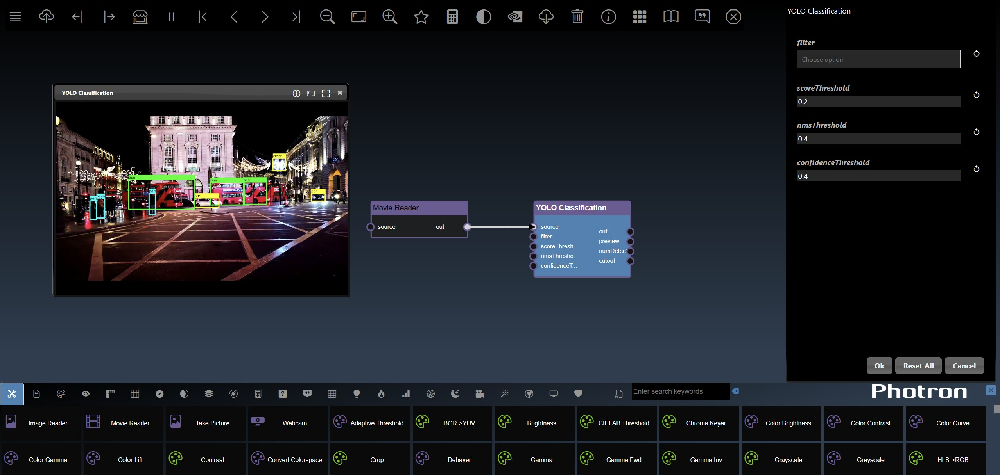
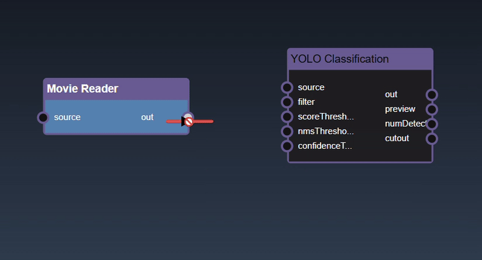
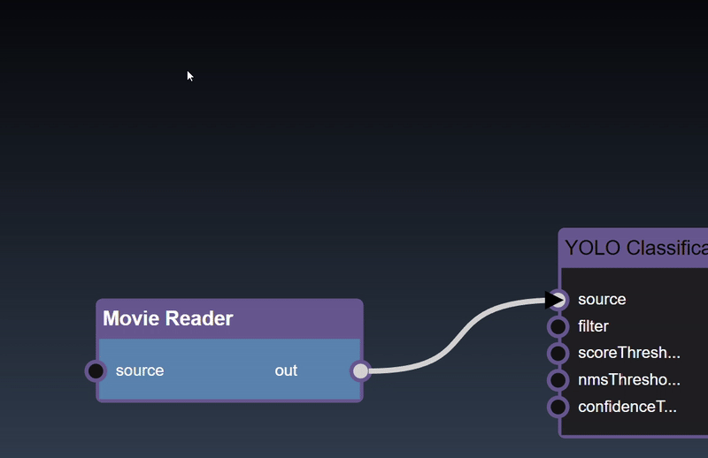

A platform for building AI, ML, & Computer Vision pipelines using real-time sensing data
INFINIWORKFLOW runs in a browser with the following main UI components
The application menu allows the following functionality
The tool catalog allows you to add new tools as nodes into your flowgraph
The first tab will show all the tools and the remaining tabs show a subset of tools such as related to computer vision or ML etc. You can hover over the tab icon and a tooltip will show you the category name. Once a category tab is selected you can further refine the list of tools shown by entering keywords input, this is useful to quickly find a particular tool you want to insert into your workflow.
Hovering over the tools shows a tooltip description of the tool. To insert a tool into the workflow can be done with the following gestures:
Drag and Drop

Insert a node with edge
The flowgraph is used to construct your workflow that comprises of Nodes and Edges. Nodes represents functions that have input and generate outputs. These nodes are created by dragging tools into your workflow from the Tools Catalog. A node's input and output have 'ports' which are where edges can be connected. Edges are connections between the output port of an upstream node to the input port of a upstream node. Any inputs ports that are unconnected can also be set to specific values using the Parameter Editor. The color of the node indicates the implementation language for the as follows:
| C++ Nodes (can be executed on GPU or CPU) | |
| Python Nodes (can be executed on GPU or CPU) | |
| Cuda Kernels (always executed on the GPU) | |
| Widget nodes (executed on the CPU) |
The flowgraph has the following components:
Adding an Edge to connect the output of an upstream node to the input of a downstream node. In this example, we want to have the Yolo Classification be done on a Movie Reader, we thus connect the output of the Movie Reader node to the input of the Yolo Classification node. Click on the source port of the upstream node and the drag to the destination port of the downstream node. A green line color indicates that the edge is allowed which is based on the type matching between the two ports
If the types do not match then a red line color indicates that the edge is invalid

There are a few exceptions to allow different types to be connected to each other. For example, the image2D type, which represents a 2D image in system memory, can be connected to a type cuda2D, a 2D image in GPU memory and vice-versa. The exceptions are as follows:
| Output Type | Input Type |
|---|---|
| * | Any type |
| Any type | * |
| image2D, matrix2D, buffer2D, cuda2D or texture2D | *2D |
| image2D, matrix2D or cuda2D | image2D, matrix2D or cuda2D |
| double, int, bool or numeric | double, int, bool or numeric |
| double, int, bool or numeric | double, int, bool or numeric |
| numeric2 | double2, int2 |
| double2, int2 | numeric2 |
Removing an Edge disconnects the output of upstream node to the input of a downstream node. In this example we no longer want the Yolo Classification be done on the output of the Movie Reader. Hover over the edge, it will indicate it can be deleted when a change in cursor happens, then click on the edge to delete it

To see the type of a node's input or output, hover over the port and it will show as a tooltip
Select a node can be done with a single click on the node. The node is shown highlighted in blue when it is selected

Clicking and dragging on a node will select it and also allow you to move the node around in the flowgraph

Holding the shift key whilst clicking allows you to add more nodes to the selection

To deselect all the nodes you can click on the flowgraph

Multiple nodes can also be selected by doing a rectangular selection, hold the alt key and drag the mouse which shows a box selection which will select all the nodes in the rectangle intersection after the mouse is released

To delete a node can be done by clicking the delete key
To 'View & Edit' a node, double click the node, if there are multiple outputs a menu will allow you to select which output you wish to view
To View a specific output you can double click on the output port of the node
You can also 'rip' a node to remove it from the edges by shaking the node quickly

To zoom into the center of the flowgraph you can press the + hotkey
To zoom out of the flowgraph you can press the - hotkey
To zoom into the center of the flowgraph you can press the + hotkey
To zoom fit flowgraph, showing all nodes in viewport, you can press the f hotkey
To pan the flowgraph you can click and then drag the mouse. This allows you to navigate the workflow in the flowgraph when it becomes more complex

You can also zoom in and out using mouse scroll wheel or zoom gesture
When nodes are not in the visible viewport then indicators are shown on the boundary of the viewport. The indicators are useful to highlight scrolling or zooming will yield hidden nodes.

Clicking the left mouse button over the node brings up the node context menu and also selects the node

Inspect and adjust functions
Node attribute functions
Performance related functions
Input/output port related functions
ML functions
Clipboard functions
Experimental functions
When you bring up the context menu without a node selected, the flowgraphs viewport functions are shown:
The Parameter Editor allows you to edit the parameters of the currently edited node
The UI consists of a tool description link, followed by the input parameters of the edited node and the dialog buttons. The description link, which shows the tool this node represents, when clicked will open a webpage that has the description of the tool. The input parameters are the ones that are able to be edited with manual values and any inputs that are connected via the flowgraph are not visible. You can also hide parameter inputs using the IO functions.
Hovering over the parameter will show the description of the parameter 
The dialog buttons allow you to close the dialog either you can accept the changes made by clicking OK or reject any changes made to the parameters by clicking Cancel. A button also allows you to reset all the parameters to the original default tool settings. The UI for each parameter input will be based on the type of the input, but all of them will have a reset icon that allows you to reset that particular parameter input back to its default value. The different types of parameter UI controls are as follows
| UI Look | Example | Description |
|---|---|---|
| Numeric textfield |  |
A numeric input allows you to enter the value. There are also step controls that allow you to increment one unit up and down. |
| Numeric2 textfield | Two numeric inputs allow you to enter both numerical inputs | |
| Numeric slider | If the slider has minimum and maximum values a slider look appears | |
| Numeric2 slider |  |
Two numeric inputs with sliders that can optionally be locked together to modify both values to the same value |
| Checkbox |  |
A checkbox toggle to allow you to set inputs of type bool |
| Selection menu |  |
A selection menu allows you to set the value to one of the predefined values from a pulldown menu |
| Multi selection menu | Multi selection allows you to add tags of permitted values. In some cases you can add tags to any custom value | |
| Textfield |  |
A multi line textfield to allow you to set inputs of type string |
| Point |  |
A point allows you to set the values with a textfield and also has an icon when pressed opens the viewer and you can select a point by clicking in the viewer directly |
| Color |
A color button when clicked allows you to set the color using a color dialog |
|
| Curve |  |
An icon when pressed opens the bezier curve editor |
| Map |
Clicking on the empty area in the dialog opens the Key/Value editor together with documentation about the hyperparameters
|
|
| Filebrowser | Opens the IO dialog that allows you to to set the filename using a textfield. The prefix ${assets} is used to specify the file location is in the assets folder. An icon when pressed opens the IO Dialog that allows you to set the file location | |
| Tabs | Some of the tools also have a tab UI to simplify the controls into logical groups |
The viewer allows you to view the outputs of the currently viewed node
A node can be viewed using the node context menu and selecting 'View' or 'View & Edit'. When viewing a node with multiple outputs a menu will ask which output to view (alternatively, if you wish to view a specific output of a node, you can double click the output port directly and avoid needing to select from the menu)

The viewer also has controls to zoom in and pan. Using the mouse scroll wheel or zoom gesture you can also then pan by dragging the image. When zoomed in, a thumbnail is shown of the full image together with a slider to set the zoom amount.

Point input parameters in the Parameter Editor can be set in the overlay. Select the overlay icon and then click in the viewer to set the location of the point:
Only one node can be viewed at one time in the viewer. However, the flowgraph can also show a thumbnail display that shows the results of the output of the node using the 'Thumbnail Image Display' tool. This allows you to show multiple viewers at the same time on the workflow. Multiple other Display Nodes can view different types of outputs directly on the flowgraph.

The viewer as well as displaying images has specific UI to display
Dataframes represent 2D tables and are implemented using the Pandas Python module. The viewer can display dataframes in a table. The controls allow you to slice a set of the rows and columns, in the example below we slice rows [30-40). The icon allows different representations of the table including show the sliced rows and columns, and red cells represent missing data; a summary description of the statistics of each column and the description of the types of each column:

Tensors represent multi-dimensional numeric arrays and are used in the PyTorch Python module. The viewer can display tensors in a variety of different visualizations where it will select the most useful visualization first and by clicking the allows you to visualize other representations of the tensor. Slicing controls are also available to reduce the tensor to a subset of its data.
A 1D dimensional tensors can be viewed as a histogram; a dot plot; a line chart and a histogram chart:
A 2D dimensional tensors can be viewed as a heatmap; a 3D height map plot; a line chart and a table:

A 3D dimensional tensors can be viewed as a 3D plot and abbreviated tensor list:
Images can also be converted to tensors(using the 'Image to Tensor' tool) and they will be viewed as a 3D image; a 3D height map plot; a 3D color space plot, and abbreviated tensor list:

A set of tools, called Widgets, are available that provide user interface controls directly in the flowgraph
These widgets are an easy way to modify the parameters without having to open the Parameter Editor - you can selectively decide which parameters are important enough to add as widgets to the flowgraph. For example he following flowgraph has a number of widgets added: a Filebrowser, Selection List and Slider are added to the flowgraph as well as two output view widgets:

You can now modify those controls directly in the flowgraph. Furthermore, the widgets can be used in conjunction with the 'Publish' feature. Each widget can be opened in the Parameter Editor and you can set the attributes such as the name which will show in the published view for each widget. Widgets such as Sliders allow you to set their specific attributes such as the minimum, maximum and step value for the Slider widget. All widgets have the common attributes of the name and description (used for tooltips) as well as layouts. The layouts allow you to specify an optional Tab widget the widget will be placed in and also the order in which the control, a lower number will allow the control to be higher up in the layout. An example of the Widget Slider's parameters are as follows:

The User Interface Widgets tools are all under the Widgets category.The full list of display tools is as follows:
| Name | Icon | Inputs | Outputs | Description |
|---|---|---|---|---|
| Widget Bool Trigger |
|
|
A widget to triggers a perodic burst to represents bool types | |
| Widget Checkbox |
|
|
A checkbox widget that represents bool types | |
| Widget Color |
|
|
A color dialog widget that represents color types | |
| Widget Curve |
|
|
A curve widget that represents bezier curve types | |
| Widget Double2 Slider |
|
|
Two slider widgets that represents double2 types | |
| Widget Double2 Textfield |
|
|
Two textfield widgets that represents double types | |
| Widget Double Slider |
|
|
A slider widget that represents double types | |
| Widget Double Textfield |
|
|
A textfield widget that represents double types | |
| Widget Filebrowser |
|
|
A filebrowser widget that represents string types | |
| Widget Int2 Slider |
|
|
Two slider widget that represents int2 types | |
| Widget Int2 Textfield |
|
|
A slider textfield that represents int types | |
| Widget Int Slider |
|
|
A slider widget that represents int types | |
| Widget Int Textfield |
|
|
A textfield widget that represents int types | |
| Widget Int Trigger |
|
|
A button widget to triggers a step jump | |
| Widget Map |
|
|
A widget that represents map types | |
| Widget Output |
|
A widget that represent a published output | ||
| Widget Password |
|
|
A password widget that represents string types | |
| Widget Path |
|
|
A overlay drawing path widget that represents path types | |
| Widget Double2 Point |
|
|
A point widget that represents double2 types | |
| Widget Int2 Point |
|
|
A point widget that represents int2 types | |
| Widget Select List |
|
|
A multi select widget that represents string types | |
| Widget Select Menu |
|
|
A select widget that represents int types | |
| Widget String Textfield |
|
|
A textfield widget that represents string types | |
| Widget Textarea |
|
|
A textarea widget that represents string types |
See the section on 'publishing' to understand how you can leverage widgets in published workflows.
A set of tools, called Displays, are available that provide viewing displays directly in the flowgraph This allows you to constantly monitor the output of multiple nodes and avoid switching back and for using the Viewer. A common display is the thumbnail display that shows the results of the output of the node using the 'Thumbnail Image Display' tool.
If you instead want to visualize the full size image rather than the thumbnail, you can use the 'Full Image Display' tool. This shows the image at the actual resolution in pixels:
You can also display the matrix (matrix2D) of nodes using the 'Matrix2D Display' tool that shows the results in a table:
DataFrames can also be displayed as tables on the flowgraph using the 'DataFrame Display'. The first few rows of the table are shown, and double clicking the node will show the other visualizations (statistics and datatypes):
Tensors can be displayed using the 'Tensor Display'. Double clicking the node will show the other visualizations for the tensor:
Additionally, displays are available for all the primitive types such as integers, doubles, booleans etc. These displays are useful to get realtime visualization of the various outputs of your node:

The Display tools that allow you to visualize directly in the flowgraph tools are all under the Outputs category.The full list of display tools is as follows:
| Name | Icon | Inputs | Outputs | Description |
|---|---|---|---|---|
| Bool Display |
|
Show Bool | ||
| Color Display |
|
Show Color | ||
| DataFrame Display |
|
DataFrame Viewer | ||
| Double2 Display |
|
Show Double2 | ||
| Double Display |
|
Show Double Number | ||
| Fullscreen |
|
Show Image | ||
| Full Image Display |
|
Show Full Image | ||
| imshow Display |
|
imshow Image Viewer - only displays on the server | ||
| Int2 Display |
|
Show Int2 | ||
| Int Display |
|
Show Int | ||
| Matrix2D Display |
|
Show Matrix2D | ||
| String Display |
|
Show String | ||
| Tensor Display |
|
Tensor Viewer | ||
| Thumbnail Image Display |
|
Show Thumbnail of Image |
You can create triggers to activate certain nodes that require a trigger to execute. Typically, you can use the various boolean expression - for example, in the workflow below, the number of detected faces is applied to a ""Numeric a>b" tool, this will yield whenever the number of faces is greater than a certain amount you can set. The output of this node is a "trigger" that is used to execute a "Text to Speech" node.

As well as creating triggers automatically based on your outputs of the nodes on your flowgraph, you can also create add manual triggers. The Widgets include a "Widget Bool Trigger" and a "Widget Int Trigger". A bool trigger creates a "binary pulse", whereas an int trigger generates a staircase function. Both are useful to manually trigger a node or use one trigger to manually trigger multiple nodes to execute.

The Data Science tools are all under the Data Frame category. The implementation is based on Pandas, an open source data analysis and manipulation library. A Data Frame can be loaded with the "Read CSV" or "Read Excel" tools or created programtically with the "Random Table" tool or converting from numpy or tensors. For many of the tools, they will use "Column" or "Columns" properties representing a choice of a single column or a subset of columns. Some of the tools also have an "arg" property which is a map that allows you to pass in additional optional arguments - the Key/Value Dialog UI will show the corresponding Pandas function's webpage documentation which you can determine the additional parameters you wish to provide
The Datascience filters tools are all under the Datascience category.The full list of display tools is as follows:
| Name | Icon | Inputs | Outputs | Description |
|---|---|---|---|---|
| Bool Cell |
|
|
Get bool cell value. | |
| Columns |
|
|
Returns a subset of columns | |
| Columns Table |
|
|
Returns the columns of the table | |
| Count Table |
|
|
Returns the count of the table | |
| Group By Count Table |
|
|
Returns the table with grouped count | |
| Double Cell |
|
|
Get double cell value. | |
| Drop Columns Table |
|
|
Returns the table with some columns dropped | |
| Drop Nan Columns |
|
|
Drop any columns with Not a Number | |
| Drop Nan Rows |
|
|
Drop any rows with Not a Number | |
| Drop Rows Table |
|
|
Returns the table with some rows dropped | |
| Fill Nan Columns |
|
|
Fill any columns with Not a Number | |
| Fill Nan Rows |
|
|
Fills any rows with Not a Number | |
| Index Location Table |
|
|
Integer-location based indexing for selection by position. | |
| Int Cell |
|
|
Get int cell value. | |
| Join Table |
|
|
Join Two Tables | |
| Max Table |
|
|
Returns the max of the table | |
| Group By Max Table |
|
|
Returns the table with grouped max | |
| Mean Table |
|
|
Returns the mean of the table | |
| Group By Mean Table |
|
|
Returns the table with grouped mean | |
| Merge Table |
|
|
Merges Two Tables | |
| Min Table |
|
|
Returns the min of the table | |
| Group By Min Table |
|
|
Returns the table with grouped min | |
| Numpy To Table |
|
|
Converts numpy to dataframe | |
| One Hot Encoding |
|
|
Reflect the DataFrame over its main diagonal by writing rows as columns and vice-versa | |
| Random Table |
|
|
Return random table | |
| Read CSV |
|
|
Read CSV file into Panda Table | |
| Read Excel |
|
|
Read Excel into Panda Table | |
| Sample Table |
|
|
Returns the sampled table | |
| Table Shape |
|
|
Returns the number of rows and columns | |
| Sort Columns |
|
|
Sort Columns | |
| Sort Rows |
|
|
Sort Rows | |
| STD Table |
|
|
Returns the standard deviation of the table | |
| Group By STD Table |
|
|
Returns the table with grouped standard deviations | |
| String Cell |
|
|
Get string cell value. | |
| Sum Table |
|
|
Returns the sum of the table | |
| Group By Sum Table |
|
|
Returns the table with grouped sums | |
| Transpose Table |
|
|
Reflect the DataFrame over its main diagonal by writing rows as columns and vice-versa | |
| Value Counts Table |
|
|
Returns the number of unique rows of the table | |
| Where Table |
|
|
Returns the table after a query is performed |
A number of tools are available to create charts for DataFrames. These tools are all under the Plot category. Each plot tool has parameters placed into two tabs: Data and Layout. The Data parameters allow you to set the columns you wish to plot and the Layout parameters allow you to adjust the title of the chart etc. For example, the "Line Plot" tool has the following Data parameters:

The X and Y allow you to set the columns you wish for the X and Y-axis. If no columns are set for the Y-axis then the plot will include all numerical columns in the DataFrame. If the X parameter is not set then the index of the DataFrame will be used as the X-axis. In the example, below two columns (sbp and tobacco) are plotted for Y against the "row.names" column:
The Layout tab allows you to specify the title for the chart as well as the labels for the axis. You can also hide or show the Legend and the size of the figure in inches. The "color" parameter is a list that you can set colors such as "red", or #6580ab etc. If you have two Y columns you plot then if you set one color both line charts will use the same color but if you set two colors in the list then you can distinguish each line chart.

An subset of the plot tool visualizations are as follows:
 |
|
 |
|
The Plot figures tools are all under the Plot category.The full list of display tools is as follows:
| Name | Icon | Inputs | Outputs | Description |
|---|---|---|---|---|
| Area Plot |
|
|
Pandas area plot | |
| Bar Plot |
|
|
Pandas bar plot | |
| Bar Horizontal Plot |
|
|
Pandas line plot | |
| Box Plot |
|
|
Pandas box plot | |
| Confusion Matrix Plot |
|
|
Plot truth vs prediced | |
| Density Plot |
|
|
Pandas density plot | |
| Hexbin Plot |
|
|
Pandas hexbin plot | |
| Histogram Plot |
|
|
Pandas histogram plot | |
| Line Plot |
|
|
Pandas line plot | |
| Metric Plot |
|
|
Plot truth vs prediced | |
| Pie Plot |
|
|
Pandas scatter pechart | |
| Scatter Plot |
|
|
Pandas scatter plot |
The Color Correction tools are all under the Color category.The full list of display tools is as follows:
| Name | Icon | Inputs | Outputs | Description |
|---|---|---|---|---|
| Adaptive Threshold |
|
|
The function is typically used to get a bi-level (binary) image out of a grayscale image | |
| Color Brightness |
|
|
Change the Brightness thorugh a Look Up Table (L.U.T.) for a Colored Image | |
| Color Contrast |
|
|
Change the Contrast thorugh a Look Up Table (L.U.T.) for a Colored Image | |
| Color Curve |
|
|
Create a Curve Mask Thorugh a Look Up Table (L.U.T.) for a Colored Image | |
| Convert Colorspace |
|
|
Convert Colorspace | |
| BGR->YUV |
|
|
BGR to YUV of Cuda Buffer | |
| Brightness |
|
|
Change Brightness of Cuda Buffer | |
| Chroma Keyer |
|
|
Chroma Key of Cuda Buffer | |
| CIELAB Threshold |
|
|
CIELAB Threshold of Cuda Buffer | |
| Contrast |
|
|
Change Contrast of Cuda Buffer | |
| Crop |
|
|
Crop input image | |
| Gamma |
|
|
Change Gamma of Cuda Buffer | |
| Gamma Fwd |
|
|
Gamma Fwd of Cuda Buffer | |
| Gamma Inv |
|
|
Gamma Inv Cuda Buffer | |
| Grayscale |
|
|
Grayscale of Cuda Buffer | |
| HLS->RGB |
|
|
HLS to RGB of Cuda Buffer | |
| HSL Correct |
|
|
Modify Color of Cuda Buffer Using HSL Sliders | |
| HSV->RGB |
|
|
HSV to RGB of Cuda Buffer | |
| HSV Correct |
|
|
Modify Color of Cuda Buffer Using HSV/HSB Sliders | |
| Hue Threshold |
|
|
Hue Threshold of Cuda Buffer | |
| Invert |
|
|
Inverts RGB channels of Cuda Buffer | |
| Levels |
|
|
Smoothstep leveling of Cuda Buffer Using Gamma Function | |
| Lift |
|
|
Change Lift of Cuda Buffer | |
| RGB->HLS |
|
|
RGB to HLS of Cuda Buffer | |
| RGB->HSV |
|
|
RGB to HSV of Cuda Buffer | |
| RGB->YUV |
|
|
RGB to YUV of Cuda Buffer | |
| RGB Threshold |
|
|
RGB Threshold of Cuda Buffer | |
| Smoothstep |
|
|
Smoothstep of Cuda Buffer | |
| YUV->BGR |
|
|
YUV to BGR of Cuda Buffer | |
| YUV->RGB |
|
|
YUV to RGB of Cuda Buffer | |
| Debayer |
|
|
Debayer | |
| Histogram Equalization |
|
|
Histogram Equalization | |
| Color Gamma |
|
|
Change the Gamma thorugh a Look Up Table (L.U.T.) for a Colored Image | |
| Grayscale |
|
|
Convert to grayscale | |
| HSL->HSV |
|
|
Convert Colorspace | |
| HSL->RGB |
|
|
Convert Colorspace | |
| HSV->RGB |
|
|
Convert Colorspace | |
| In Range |
|
|
Threshold if between min and max | |
| Invert Color |
|
|
Invert Color Using Bitwise Not | |
| Color Lift |
|
|
Lifts the Brightness thorugh a Look Up Table (L.U.T.) for a Colored Image | |
| RGB->HSL |
|
|
Convert Colorspace | |
| RGB->HSV |
|
|
Convert Colorspace | |
| RGB->YUV |
|
|
Convert Colorspace | |
| Threshold |
|
|
The function is typically used to get a bi-level (binary) image out of a grayscale image | |
| YUV->HSV |
|
|
Convert Colorspace | |
| YUV->RGB |
|
|
Convert Colorspace |
The Combine and Split Images tools are all under the Composite category.The full list of display tools is as follows:
| Name | Icon | Inputs | Outputs | Description |
|---|---|---|---|---|
| Absolute Difference |
|
|
Absolute Difference Operations on Two Images | |
| Add |
|
|
Add Operations on Two Images | |
| Bitwise And |
|
|
Bitwise And Operations on Two Images | |
| Binary |
|
|
Binary Operations on Two Images | |
| Add |
|
|
Composite with Add blend mode | |
| Average |
|
|
Composite with Average blend mode | |
| Blend |
|
|
Change Blend of Cuda Buffer | |
| Color Burn |
|
|
Composite with Color Burn blend mode | |
| Color Dodge |
|
|
Composite with Color Dodge blend mode | |
| Darken |
|
|
Composite with Darken blend mode | |
| Difference |
|
|
Composite with Difference blend mode | |
| Exclusion |
|
|
Composite with Exclusion blend mode | |
| Glow |
|
|
Composite with Glow blend mode | |
| Hard Light |
|
|
Composite with Hard Light blend mode | |
| Hard Mix |
|
|
Composite with Hard Mix blend mode | |
| Lighten |
|
|
Composite with Lighten blend mode | |
| Linear Burn |
|
|
Composite with Linear Burn blend mode | |
| Linear Dodge |
|
|
Composite with Linear Dodge blend mode | |
| Linear Light |
|
|
Composite with Linear Light blend mode | |
| Multiply |
|
|
Composite with Multiply blend mode | |
| Negation |
|
|
Composite with Negation blend mode | |
| Normal |
|
|
Composite with Normal blend mode | |
| Overlay |
|
|
Composite with Overlay blend mode | |
| Phoenix |
|
|
Composite with Phoenix blend mode | |
| Pin Light |
|
|
Composite with Pin Light blend mode | |
| Reflect |
|
|
Composite with Reflect blend mode | |
| Screen |
|
|
Composite with Screen blend mode | |
| Soft Light |
|
|
Composite with Soft Light blend mode | |
| Subtract |
|
|
Composite with Subtract blend mode | |
| Vivid Light |
|
|
Composite with Vivid Light blend mode | |
| Divide |
|
|
Divide Operations on Two Images | |
| Draw Circles |
|
|
Draws Circles | |
| Draw Contours |
|
|
Draws contours outlines or filled contours | |
| Draw Lines |
|
|
Draws Lines | |
| Draw Paths |
|
|
Draws Paths | |
| Draw Rectangles |
|
|
Draws Rectangles | |
| Draw Shapes |
|
|
Draws Lines, Circles, and/or Rectangles | |
| Draw Text |
|
|
Draws Text String | |
| Extract Channel |
|
|
Extract One Channel | |
| Horizontal Combine |
|
|
Horizontally Combine Two Images | |
| Maximum |
|
|
Maximum Operations on Two Images | |
| Merge |
|
|
Merges inputs into one channel. | |
| Minimum |
|
|
Minimum Operations on Two Images | |
| Multiply |
|
|
Multiply Operations on Two Images | |
| Bitwise Not |
|
|
Inverts every bit of an array | |
| Bitwise Or |
|
|
Bitwise Or And Operations on Two Images | |
| Split |
|
|
Splits image into individual channels. | |
| Per Element Sqrt |
|
|
Calculates a square root of array elements | |
| Subtract |
|
|
Subtract Operations on Two Images | |
| Switch Image2D |
|
|
Outputs one of the selected inputs | |
| Vertical Combine |
|
|
Vertically Combine Two Images | |
| Bitwise XOR |
|
|
Bitwise XOR Operations on Two Images |
The Experimental Tools tools are all under the Experimental category.The full list of display tools is as follows:
| Name | Icon | Inputs | Outputs | Description |
|---|---|---|---|---|
| Abs Subtraction Shaders |
|
|
Find Absolute Value of Difference Between 2 Images using a GPU Shader | |
| Add Shaders |
|
|
Add 2 Images Together using a GPU Shader | |
| Beams Shader |
|
|
Applies Beam Rendering | |
| Brightness Shader |
|
|
Change the Brightness using a GPU Shader | |
| Clouds Shader |
|
|
Applies Cloud Rendering | |
| Contrast Shader |
|
|
Change the Contrast using a GPU Shader | |
| Dissolve Shaders |
|
|
Dissolve 2 Images Together using a GPU Shader | |
| Texture Download |
|
|
Downloads to CPU System Memory from GPU Texture Memory | |
| Flip Shader |
|
|
Flips horizontal/vertical | |
| Gamma Shader |
|
|
Change the Gamma using a GPU Shader | |
| Geo Api |
|
|
Geo Api | |
| Grayscale Shader |
|
|
Change a Color Texture to Grayscale using a GPU Shader | |
| Horizontal Ramp |
|
|
Change Color Texture with Vertical Ramp using a GPU Shader | |
| Invert Shader |
|
|
Inverts RGB channels of OpenGL Texture | |
| Lift Shader |
|
|
Change the Lift using a GPU Shader | |
| Max Shaders |
|
|
Find Max of 2 Images Together using a GPU Shader | |
| Min Shaders |
|
|
Find Min of 2 Images Together using a GPU Shader | |
| Multiply Shaders |
|
|
Multiply 2 Images Together using a GPU Shader | |
| Primatte AI |
|
|
Primatte AI | |
| Reverse Geo Api |
|
|
Reverse Geo Api | |
| Sobel Shader |
|
|
Applies Soberl Edge Filter | |
| Stock Price |
|
|
Stock Price using Yahoo Finance | |
| Subtract Shaders |
|
|
Subtract 2 Images Together using a GPU Shader | |
| Texture Output |
|
Outputs Native Viewer | ||
| Transform Shader |
|
|
Transform 2D Shader using a GPU Shader | |
| Texture Upload |
|
|
Uploads CPU System Memory to GPU Texture Memory | |
| Vertical Ramp |
|
|
Change Color Texture with Vertical Ramp using a GPU Shader | |
| Virtual Set |
|
|
OpenSceneGraph based Virtual Set |
The Image Processing Filters tools are all under the ImageProcessing category.The full list of display tools is as follows:
| Name | Icon | Inputs | Outputs | Description |
|---|---|---|---|---|
| Bilateral Filter |
|
|
Applies bilateral filter to image | |
| Blur |
|
|
Blurs an image using the normalized box filter | |
| Box Filter |
|
|
Blurs an image using the box filter | |
| Build Pyramid |
|
|
Constructs the Gaussian pyramid for an image. 4 images outputted. | |
| Cam Shift |
|
|
Finds the rotated rectangle with the maximum number of points. When the object moves, the movement is reflected in the meanshift algorithm | |
| Canny Edge Detector |
|
|
Canny Edge Detection is a popular edge detection algorithm | |
| Convert Depth |
|
|
Convert Depth Precision between 8u, 8s, 16u, 16s, and 32f | |
| Detect Circles |
|
|
Detects circles in a grayscale image using the Hough transform. | |
| Detect Lines |
|
|
Detects lines in a grayscale image using the Hough transform. | |
| Dilate |
|
|
Blur and dilate image with vertical and horizontal blur | |
| Dilate 3x3 |
|
|
Blur image based on maximum luminance value of surrounding pixels | |
| Erode |
|
|
Blur and erode image with vertical and horizontal blur | |
| Erode 3x3 |
|
|
Blur image based on minimum luminance value of surrounding pixels. 3x3 pixels are blurred at a time. | |
| Gauss |
|
|
Gauss Filter on Cuda Buffer | |
| High Pass |
|
|
High Pass Filter on Cuda Buffer | |
| Iterative Blur |
|
|
Blur image using iterative 3x3 blurs | |
| Laplace |
|
|
Laplace Filter on Cuda Buffer | |
| Low Pass |
|
|
Low Pass Filter on Cuda Buffer | |
| Median Blur |
|
|
Blur image using median 3x3 blurs | |
| Prewitt |
|
|
Combination of Prewitt Horiz and Prewitt Vert on Cuda Buffer | |
| Roberts |
|
|
Combination of Roberts Filter Down and Roberts Filter Up on Cuda Buffer | |
| Separable Blur |
|
|
Blur image with vertical and horizontal blur | |
| Sharpen |
|
|
Filters the Cuda Buffer using a sharpening filter kernel | |
| Sobel |
|
|
Combination of Sobel Horiz and Sobel Vert on Cuda Buffer | |
| Delay |
|
|
Shows a Delayed Image | |
| Dilate |
|
|
Dilates an image (expands the primary object) by using a specific structuring element that determines the shape of a pixel neighborhood over which the maximum is taken | |
| Erode |
|
|
Erodes an image (shrinks the primary object) by using a specific structuring element that determines the shape of a pixel neighborhood over which the minimum is taken | |
| Filter 2D |
|
|
Convolves an image with the kernel, applying an arbitrary linear filter to an image | |
| Find Countours |
|
|
Finds contours in a binary image | |
| Detect Circles |
|
|
Detects circles in a grayscale image using the Hough transform. | |
| Detect Lines |
|
|
Detects lines in a grayscale image using the Hough transform. | |
| Laplacian Edge Detector |
|
|
Laplacian Edge Detect | |
| Mean Shift |
|
|
Finds the rectangle with the maximum number of points. When the object moves, the movement is reflected in the meanshift algorithm | |
| Mean Color |
|
|
Calculates an average (mean) value of array elements, independently for each channel | |
| Mean Mask |
|
|
Calculates an average (mean) value of array elements for a grayscale image | |
| Median Blur |
|
|
Blurs an image using the median filter | |
| Pyr Down |
|
|
Blurs an image and downsamples it | |
| Pyr Up |
|
|
Upsamples an image and then blurs it | |
| Scharr Edge Detector |
|
|
Scharr Edge Detect | |
| Sep Filter 2D Gabor |
|
|
Applies a separable linear filter to an image | |
| Sep Filter 2D Gaussian |
|
|
Applies a separable linear filter to an image | |
| Sobel |
|
|
Detects edges by calculating the first, second, third, or mixed image derivatives using an extended Sobel operator | |
| Spatial Gradient |
|
|
Calculates the first order image derivative in both x and y using a Sobel operator, which emphasizes regions of high spatial frequency that correspond to edges. | |
| Sqr Box Filter |
|
|
Blurs an image using the box filter by calculating the normalized sum of squares of the pixel values overlapping the filter | |
| Stack Blur |
|
|
Blurs an image by creating a kind of moving stack of colors whilst scanning through the image | |
| Sum Color |
|
|
Calculates and returns the sum of array elements, independently for each channel | |
| Sum Mask |
|
|
Calculates and returns the sum of array elements for a grayscale image |
The Source Inputs tools are all under the Inputs category.The full list of display tools is as follows:
| Name | Icon | Inputs | Outputs | Description |
|---|---|---|---|---|
| Folder Reader |
|
|
Reads filepaths from a folder | |
| Image Reader |
|
|
Reads Images from a file | |
| Movie Reader |
|
|
Reads Images from a movie | |
| Take Picture |
|
|
Takes a picture | |
| Text File Reader |
|
|
Reads from a text file | |
| Webcam |
|
|
Reads Images from a webcamera |
The Logic functions tools are all under the Logic category.The full list of display tools is as follows:
| Name | Icon | Inputs | Outputs | Description |
|---|---|---|---|---|
| And |
|
|
Logical AND operator | |
| Conditional Numeric |
|
|
An 'If' Statement for Numeric Values | |
| Conditional String |
|
|
An 'If' Statement for String Values | |
| False |
|
Returns False | ||
| Numeric a == b |
|
|
Return if inputs are equal | |
| Numeric a > b |
|
|
Return if input a > input b | |
| Numeric a >= b |
|
|
Return if input a >= input b | |
| Numeric a < b |
|
|
Return if input a < input b | |
| Numeric a <= b |
|
|
Return if input a <= input b | |
| Numeric Compare a != b |
|
|
Return if inputs are not equal | |
| Or |
|
|
Logical OR operator | |
| Range |
|
|
Return if number is in range | |
| True |
|
Returns True |
The Mask Filters tools are all under the Masks category.The full list of display tools is as follows:
| Name | Icon | Inputs | Outputs | Description |
|---|---|---|---|---|
| Mask Brightness |
|
|
Change the Brightness thorugh a Look Up Table (L.U.T.) for a Mask | |
| Mask Circles |
|
|
Draws Circles with Masks | |
| Mask Contrast |
|
|
Change the Contrast thorugh a Look Up Table (L.U.T.) for a Mask | |
| Mask Curve |
|
|
Create a Curve Mask Thorugh a Look Up Table (L.U.T.) | |
| Mask Gamma |
|
|
Change the Gamma thorugh a Look Up Table (L.U.T.) for a Mask | |
| Invert Mask |
|
|
Inverts the Mask using Bitwise Not | |
| Mask Lift |
|
|
Lifts the Brightness thorugh a Look Up Table (L.U.T.) for a Mask | |
| Mask Paths |
|
|
Draws Paths with Masks | |
| Mask Rectangles |
|
|
Draws Rectangles with Masks | |
| Mask Shapes |
|
|
Draws Lines, Circles, and/or Rectangles with Masks |
The Math functions tools are all under the Math category.The full list of display tools is as follows:
| Name | Icon | Inputs | Outputs | Description |
|---|---|---|---|---|
| Abs |
|
|
Return absolute value | |
| Arccos |
|
|
Return inverse cosine of input x, result is in degrees | |
| Arccosh |
|
|
Return inverse hyperbolic cosine of input x | |
| Arcsin |
|
|
Return inverse sine of input x, result is in degrees | |
| Arcsinh |
|
|
Return inverse hyperbolic sine of input x | |
| Atan2 |
|
|
Return inverse hyperbolic tangent of input x | |
| Arctanh |
|
|
Return archtan(a) | |
| Ceil |
|
|
Return ceil(x) | |
| Cos |
|
|
Return cosine of input x (where x is in degrees) | |
| Cosh |
|
|
Return hyperbolic cosine of input x | |
| Counter Double |
|
|
Counts numbers | |
| Counter Int |
|
|
Counts numbers | |
| Divide |
|
|
Return a/b | |
| e |
|
Returns eulers number | ||
| Exponential |
|
|
Return e^x | |
| Floor |
|
|
Return floor(x) | |
| Log |
|
|
Return log(x,base) | |
| Minus |
|
|
Return a-b | |
| Mod |
|
|
Return mod(a,b) | |
| Multiply |
|
|
Return a*b | |
| One |
|
Return number one | ||
| PI |
|
Return PI | ||
| Plus |
|
|
Return a+b | |
| Power |
|
|
Return a^b | |
| Random Number |
|
|
Return random number | |
| Sin |
|
|
Return sine of input x (where x is in degrees) | |
| Sinh |
|
|
Return hyperbolic sine of input x | |
| Sqrt |
|
|
Return square root of x | |
| Square |
|
|
Return x^2 | |
| Tan |
|
|
Return tangent of input x (where x is in degrees) | |
| Tanh |
|
|
Return hyperbolic tangent of input x | |
| Zero |
|
Return number zero |
The Matrix operations tools are all under the Matrix category.The full list of display tools is as follows:
| Name | Icon | Inputs | Outputs | Description |
|---|---|---|---|---|
| Per Element Comparison |
|
|
Performs the per-element comparison of two arrays or an array and scalar value. When the comparison result is true, the corresponding element of output array is set to 255 | |
| Eigen |
|
|
Calculates eigenvalues and eigenvectors of a matrix | |
| Integral |
|
|
Calculates the integral of an image | |
| Inverse Matrix |
|
|
Finds the inverse or pseudo-inverse of a matrix | |
| Matrix Multiply |
|
|
Calculates the matrix multiplication of two arrays | |
| Per Element Multiply |
|
|
Calculates the per-element scaled product of two arrays | |
| Norm |
|
|
Calculates the absolute norm of an array | |
| Relative Norm |
|
|
Calculates an absolute difference norm or a relative difference norm of two arrays | |
| Select |
|
|
Sets the output matrix to the value from the first input matrix if corresponding value of mask matrix is 255, or value from the second input matrix (if value of mask matrix set to 0) | |
| Trace |
|
|
Returns the trace of a matrix, the sum of its diagonal elements | |
| Transpose |
|
|
Transposes a matrix |
The Photron Filters tools are all under the Photron category.The full list of display tools is as follows:
| Name | Icon | Inputs | Outputs | Description |
|---|---|---|---|---|
| Depth Reader |
|
|
Reads Depth Images from a file | |
| Infinicam |
|
|
View live Images from a Photron Infinicam | |
| Photron Live |
|
|
View live Images from a Photron Highspeed camera | |
| Photron Playback |
|
|
Playback Images from a Photron Highspeed camera |
Input and Export files are shown in a custom file selector dialog. Files icons and Folder icons are selectable. You have restricted access to the files that are located in either the ${assets} or ${demos} folders where INFINIWORKFLOW is installed. To import your own images, copy the files to the ${assets} folder and then they will be available to select in the file selector dialog.

You can set the hyperparameters using the node context menu and selecting 'Hyperparameters'. This brings up a dialog that allows you to select each input parameter and also set the range of values you want to have as part of the grid search. The dialog also includes the documentation for the model including the values expected for each parameter argument.

Once you have refined your 'Hyperparameters' then you can start a Grid Search on a metric node you wish to maximize or minimize using the node context menu and selecting 'Grid Search'. The results of the Grid Search are done in a different process but you can see the results by clicking the icon in the application menu. The dialog will show the latest progress for each combination in the grid search and color indicators to show which is the highest or lowest value so far found. You can select a link in one of the rows to optimize your model which sets the hyperparameters values to the row.

When building models using the PyTorch nodes, the neural networks can get large with multiple nodes to generate the entire neural network. You can create a macro to create a tool that replaces all the nodes which can be further used in the future and promotes sharing of models. When you create a macro you open the node context menu and select 'Create Macro'. The dialog allows you to name and set optional notes that will be associated with this new tool.

INFINIWORKFLOW runs on a modern PC with Windows 11 or higher with an Intel or AMD processor and a NVIDIA GPU with 12GB+ of disk space. It is highly recommended to have a multicore processor as the execution will be more smoother. The software will run on machines without a NVIDIA GPU but that will significantly reduce the performance especially for ML workflows. You must also have the latest Google Chrome browser installed : 131.0.6778.140 or higher.
The following are the full set of downloads packages:
Make sure you have the latest Google Chrome browser installed : 131.0.6778.140 or higher and it is set to your default browser. Then download the INFINWORKFLOW package from Photron's website. There are multiple packages, the first package to download is infiniworkflow_v1_0.zip. Unzip this file to a location where you want to maintain the INFINIWORKFLOW application, for example in your Documents folder. To install, double click on the install.bat file in the unzipped folder - the installation will install the required Python modules. The installation of Python modules will take around 30 minutes and requires network access, please let it run to completion before you proceed to the next step.
After is is completed, to run INFINIWORKFLOW, double click on the infiniworkflow.bat file in the unzipped folder:

A webpage displayed in the Google Chrome browser should appear - if another browser shows up then change your default browser to Chrome and redo this step.
The first thing that will be displayed in the browser is the INFINIWORKFLOW EULA which you must agree to. You will also see a Windows dialog that requests "Do you want to allow public and private networks to access the app?" for Python - you must allow access.
When you install INFINIWORKFLOW and run it the first time, you should see a Windows dialog that requests "Do you want to allow public and private networks to access the app?" for Python - you must allow access. If this dialog does not pop up and INFINWORKFLOW does not show images in the viewer then you have to manually grant access to allow INFINIWORKFLOW's Python installation to have access to public and private networks as follows:
There are three flavours of patches - one is a patch to the application, one is a SDK patch and the others are feature patches to allow installation of different demos and packages. See the Downloadable Packages for the full list. The application patch is meant to patch your exisiting installation with a smaller set of files and thus has a substantially smaller download size. It is expected that the application patch will be frequently updated when bugs are fixed and small features added. To patch your exisiting installation you should download the patch, and then open a Windows Powershell prompt and then change the directory to your existing INFINIWORKFLOW installation (i.e. where you unzipped your original installation). Then type the following where you should replace /folder/to/ to the actual folder you downloaded the application patch:
patch.bat /folder/to/infiniworkflow_patch_v1_0.zip
The feature patches are meant to allow new functionaility including demos and assets such as the ML model.
For example you can download the YOLO classifier feature patch, yolo_v1_0.zip then install by open a Windows Powershell prompt
and then change the directory to your existing INFINIWORKFLOW installation (i.e. where you unzipped your original installation) and type the following where you
should replace /folder/to/ to the actual folder you downloaded the feature patch:
patch.bat /folder/to/yolo_v1_0.zip
This feature allows you to do processing on a different process on the same machine or a different machine on the network. You can start the distributed rendering by selecting a contiguous set of nodes and then using the node context menu and selecting 'Distributed'. This brings up a dialog that allows you to set the URL for the server that will be performing the processing. Once you click Ok then the selected nodes are replaced by two nodes, the Distributed Sink and Distributed Source. The Sink node will send data from your system to the distributed server and the Source node will receive data from the distributed server.


This feature allows you to simplify your workflow to just a subset of 'Widgets'. The future goal of this feature is to allow you to publish a simple app that has the critical controls that are needed in the deployment of your workflow in production whilst hiding the complexity of the workflow. The first step is to add 'Widgets' on the node inputs you want to publish as well as widget outputs to the node outputs. An example of this is as follows, where a Filebrowser, Selection List and Slider are added to the flowgraph as well as two output view widgets:
You can further refine the widgets by opening the editor and you can set the attributes such as the name which will show in the published view for each widget. Widgets such as Sliders allow you to set their specific attributes such as the minimum, maximum and step value for the Slider widget. All widgets have the common attributes of the name and description (used for tooltips) as well as layouts. The layouts allow you to specify an optional Tab widget the widget will be placed in and also the order in which the control, a lower number will allow the control to be higher up in the layout. An example of the Widget Slider's parameters are as follows:
The widget outputs allow you to specify the name of the output, used in the tooltip, as well as an optional order of the view output and an optional icon. If no icon is present then a standard set of numbers will be shown. The views are shown in the toolbar when the published view is shown, for example for the two widget outputs, you would see the following icons in the toolbar. Hovering over the icons will show the tooltip and clicking on them will view the particular output
Once you have selected the subset of input and outputs then you can click on the publish icon in the application menu and the flowgraph is hidden and a simpler UI only showing the published controls in the Parameter Editor and a fullscreen viewer is shown. You can switch back to the standard flowgraph view by pressing the publish icon again. The Parameter Editor will show the widgets you have defined in your flowgraph using their attributes such as their name and layouts:

Plugins can be implemented in C++ or Python and both will require a JSON file. The JSON Schema specifies the input and output parameters as well as the name and description of the plugin amongst other things.
All plugins must have an accompanying JSON file. The JSON file specifies the input and output parameters as well as the name and description of the plugin amongst other things. The specification of the schema is as follows:
| Attribute name | Mandatory | Default Value | Description | Example |
|---|---|---|---|---|
| title | The UI name of the plugin |
"title" : "Canny Edge Detector"Or you can specify a localized set "title": {
"en_US": "Canny Edge Detector",
"ja-JP": "",
"es-ES": "Detector de bordes Canny",
"de_DE": "Canny Kantendetektor",
"zh_CN": "Canny "
}
|
||
| identifier | The name of the plugin file |
Python:
"identifier": "day_of_week.py"C++: "identifier": "Canny2.plugin" |
||
| description | The description that explains the purpose of this plugin which will be shown in the UI |
"description" : "Canny Edge Detection is a popular edge detection algorithm"Or you can specify a localized set "description": {
"en_US": "Canny Edge Detection is a popular edge detection algorithm",
"ja-JP": "Canny Edge Detection",
"es-ES": "Canny Edge Detection es un popular algoritmo de deteccin de bordes",
"de_DE": "Canny Edge Detection ist ein beliebter Kantenerkennungsalgorithmus",
"zh_CN": "Canny "
}
|
||
| url | www.photron.com | A URL that is shown in the UI to have more information about the plugin |
"url": "https://docs.opencv.org/3.4/dd/d1a/group__imgproc__feature.html#ga04723e007ed888ddf11d9ba04e2232de" |
|
| tags | A list of tags that is associated with the plugin |
"tags": ["opencv", "edges", "canny"]Or you can specify a localized set: "tags": {
"en_US": ["opencv", "edges", "canny"],
"ja-JP": ["CV", "", ""],
"es-ES": ["abrircv", "bordes", "astuto"],
"de_DE": ["OpenCV", "Kanten", "schlau"],
"zh_CN": ["opencv", "", "" ]
}
|
||
| icon | "icon": "bi-heart-fill" |
A bootstrap icon that represents the plugin in the UI |
"icon": "bi-star" |
|
| category | The category the plugin will be placed in the Tool Catalog |
If you want to specify your own new category
"category": {
"id": "python_scripts",
"description": "User defined python scripts",
"icon": "bi-filetype-py"
}
If you want to place it in an exisiting category
"category": {
"id": "Photron"
}
|
||
| language | Must be either python, c++ or cuda |
"language": "c++" |
||
| supervise | "supervise": false |
Specifies if the plugin wants to handle supervion callbacks to enable/disable or hide/show parameters dynamically Note you must also set one of the input parameters to have a supervise attribute to be true which are the parameters that cause other parameters to change visibility |
"supervise": true |
|
| inputs | "inputs": [] |
An array of input objects that specifies each input of the plugin - see inputs schema |
"inputs": [
{
"name": "source",
"type": "image2D",
"mandatory": true,
"description":"Input image",
"identifier": "source"
},
{
"name": "threshold1",
"type": "double",
"default": "100.0",
"mandatory": true,
"description": "First threshold for the hysteresis procedure",
"identifier": "threshold1"
},
...
]
|
|
| outputs | "outputs": [] |
An array of output objects that specifies each output of the plugin - see outputs schema |
"outputs": [
{
"name": "out",
"type": "image2D",
"description": "Output edge map; single channels 8-bit image, which has the same size as image",
"identifier": "out"
}
]
|
| Attribute name | Mandatory | Default Value | Description | Example |
|---|---|---|---|---|
| name | The UI name of the input parameter |
"name" : "out"Or you can specify a localized set "name": {
"en_US": "out",
"ja-JP": "",
"es-ES": "afuera",
"de_DE": "aus",
"zh_CN": ""
|
||
| identifier | The unique identifier for this input parameter |
"identifier": "out" |
||
| description | The description that explains the purpose of this output |
"description" : "Second threshold for the hysteresis procedure"Or you can specify a localized set "description": {
"en_US": "Second threshold for the hysteresis procedure",
"ja-JP": "2",
"es-ES": "Segundo umbral para el procedimiento de histresis",
"de_DE": "Zweiter Grenzwert fr das Hystereseverfahren",
"zh_CN": ""
}
|
||
| type | The type of the parameter which which include the standard types: int, double, int2, double2, bool, string, numeric, image2D, cuda2D. Or you can define your own type name. |
"type": "double" |
||
| mandatory | "mandatory": false |
Specifies if the input parameter is mandatory and must be set by the user. |
"mandatory": true |
|
| default | The default value of the input parameter which is must be enclosed in a string. No default values should be needed for types that are not set directly by the user e.g. image2D and cuda2D |
"default": "200.0" |
||
| min | Only for numeric types such as int or double. The minimum value the input value can be set to |
"min": "5.0" |
||
| max | Only for numeric types such as int or double. The maximum value the input value can be set to |
"max": "10.0" |
||
| step | Only for numeric types such as int or double. The step value the increments of the parameter UI will jump up and down |
"step": "1.0" |
||
| permitted | Only for int or string types. An array of strings that will be in the selection UI menu or the tag selection UI | |||
| private | "private": false |
Will not show the parameter in the UI |
"private": true |
|
| editable | "editable": true |
If the parameter can be editable or not, if not editable it will be disabled in the UI |
"editable": false |
|
| multiple | "multiple": false |
Only for string types that will allow multiple values to entered in the tag UI |
"multiple": true |
|
| userOptionAllowed | "userOptionAllowed": false |
Only for string types that allow user defined strings to be entered in the tag UI |
"userOptionAllowed": true |
|
| look |
A hint to indicate how the UI should be represented instead of the default look
int types: button, slider int2, double2, numeric2: point string: map, filebrowser, curve, path |
"look": "button" |
||
| ganged | Only for int2, double2, numeric2 types that allows both the dimensions to be ganged and set to the same value |
"ganged": "button" |
||
| multiline | "multiline": false |
Only for string types that indicate if the UI should have a textarea or a single textfield widget |
"multiline": true |
|
| rows | Only for string types with a multiline set to true, indicates the number of rows of the textarea widget |
"rows": 5 |
||
| cols | Only for string types with a multiline set to true, indicates the number of columns of the textarea widget |
"cols": 10 |
||
| password | Only for string types to make the text now show when you enter text in the widget |
"password": true |
||
| supervise | "supervise": false |
Specifies when this parameter changes if you want to handle supervion callbacks to enable/disable or hide/show parameters dynamically. Note you must also set the supervise attribute of the main JSON object to true as well |
"supervise": true |
| Attribute name | Mandatory | Default Value | Description | Example |
|---|---|---|---|---|
| name | The UI name of the output parameter |
"name" : "threshold2"Or you can specify a localized set "name": "name": {
"en_US": "threshold2",
"ja-JP": "2",
"es-ES": "umbral2",
"de_DE": "Schwelle2",
"zh_CN": "2"
}
|
||
| identifier | The unique identifier for this output parameter |
"identifier": "threshold2" |
||
| description | The description that explains the purpose of this output |
"description" : "Output edge map; single channels 8-bit image, which has the same size as image"Or you can specify a localized set "description": {
"en_US": "Output edge map; single channels 8-bit image, which has the same size as image",
"ja-JP": "8",
"es-ES": "Mapa de borde de salida; imagen de 8 bits de canales individuales, que tiene el mismo tamao que la imagen",
"de_DE": "Ausgabekantenkarte; Einzelkanal-8-Bit-Bild, das die gleiche Gre wie das Bild hat",
"zh_CN": "8"
}
|
||
| type | The type of the parameter which which include the standard types: int, double, int2, double2, bool, string, map, numeric, image2D, cuda2D. Or you can define your own type name. |
"type": "image2D" |
The Python SDK uses the PythonNode base class and at a minimum you need to define a new instance which you should return in the result variable. The final plugin will be the python script and should be placed in the Extensions folder together with its JSON file. A simple example is the days_of_weeks.py sample plugin provided. The python code is as follows
from python_node import PythonNode
import datetime
class DayOfWeekNode(PythonNode):
def __init__(self):
super().__init__()
self.value = None
def execute(self, host):
if not host.is_enabled():
self.value = False
else:
year = host.get_input_int_value(0)
month = host.get_input_int_value(1)
day = host.get_input_int_value(2)
self.value = datetime.datetime.strptime(str(day) + "/" + str(month+1) + "/" + str(year), "%d/%m/%Y").strftime('%A')
host.set_output_value(0, self.value)
....
def copy(self, host):
return DayOfWeekNode()
result = DayOfWeekNode()
If you wish to instead use an existing Node but with a different JSON, e.g. you want to use the GenericDataset tool but set the parameters and hide them, then no code is needed any instead the result variable should return the identifier of the existing tool:
result = "torch.generic_loader"
However, using the Python API provides you full capability as long as you override the PluginApi class which requires 3 at least methods to be implemented: copy, execute and view_html:
class PluginApi: ''' Constructor ''' def __init__(self): pass ''' Copy Constructor ''' def copy(self, host): raise NotImplementedError ''' Executes the plugin ''' def execute(self, host): raise NotImplementedError ''' Return a HTML string that represents the nth output ''' def view_html(self, host, nth_output): raise NotImplementedError ''' Returns true if the node allows dynamic number of inputs ''' def has_dynamic_inputs(self, host): return False ''' Returns true if the node allows dynamic number of outputs ''' def has_dynamic_outputs(self, host): return False
The following methods should be overriden by your derived class of PluginApi
| Instance method | Mandatory | Arguments | Return type | Purpose |
|---|---|---|---|---|
| copy | self, host : PluginHost |
instance of this plugin class |
This method will be called when INFINWORKFLOW requests a copy of an instance of this class which should return a deep copy. | |
| execute | self, host : PluginHost |
None |
The method called when the plugin is executed usually when some input parameters have changed. You can call the host to get input values, e.g. host.get_input_int_value(...), and finally set the output value. If the execution was unsuccessful then you can call host.set_error_message with the error message If you want to have the node to be executed you can call host.set_dirty(True) otherwise the node will only get re-executed when input parameters have been modified | |
| view_html | self, host : PluginHost, nth_output : int |
string |
The method is called after the execute method, when the output of node is viewed The view_html should return a html string that represents the output of the nth output. Typically, in the execute method you can compute output values and store them in instance variables of the class and then later in the view_html you can use those values to establish what HTML string you will pass back. | |
| has_dynamic_inputs | self, host : PluginHost |
bool |
Returns if the plugin has dynamic inputs, defaults to False | |
| has_dynamic_outputs | self, host : PluginHost |
bool |
Returns if the plugin has dynamic outputs, defaults to False |
class PluginHost:
'''
Inform the host - set value to False if executing was successful, otherwise set value to True to indicate you want subsequent execution calls
'''
def set_dirty(self, value):
raise NotImplementedError
'''
Gets the number of current inputs should be same as your JSON file unless you have dynamic inputs
'''
def get_num_inputs(self):
raise NotImplementedError
'''
Gets the number of current outputs, should be same as your JSON file unless you have dynamic outputs
'''
def get_num_outputs(self):
raise NotImplementedError
'''
Gets the value of the nth input index
'''
def get_input_value(self, nth_index):
raise NotImplementedError
'''
Gets the nth input index value as int
'''
def get_input_int_value(self, nth_index):
raise NotImplementedError
'''
Gets the nth input index value as numeric (float, int or bool)
'''
def get_input_numeric_value(self, nth_index):
raise NotImplementedError
'''
Gets the nth input index value as numeric (bool)
'''
def get_input_bool_value(self, nth_index):
raise NotImplementedError
'''
Gets the nth input index value as str
'''
def get_input_string_value(self, nth_index):
raise NotImplementedError
'''
Gets the nth input index value as str and resolves ${assets}
'''
def get_input_filename_value(self, nth_index):
raise NotImplementedError
'''
Gets the nth input index value as dict
'''
def get_input_map_value(self, nth_index):
raise NotImplementedError
'''
Gets the nth input index value as bool list
'''
def get_input_bool_list_value(self, nth_index):
raise NotImplementedError
'''
Gets the nth input index value as numeric (float, int or bool) list
'''
def get_input_numeric_list_value(self, nth_index):
raise NotImplementedError
'''
Gets the nth input index value as str list
'''
def get_input_string_list_value(self, nth_index):
raise NotImplementedError
'''
Sets the nth output_port to value argument
Will also set the firsty flag to False to indicate rendering was completed
'''
def set_output_value(self, nth_output, value):
raise NotImplementedError
def set_error_message(self, error_message):
raise NotImplementedError
def is_enabled(self):
raise NotImplementedError
The following methods should can be called on the PluginHost
| Instance method | Purpose | Example |
|---|---|---|
| get_input_value | During exeuction you can get the value of an input to the plugin, where you pass the order of the parameter E.g. pass 0 for the first input parameter | value = host.get_input_value(3) |
| get_input_bool_value | A helper method that calls get_input_value and returns the value as a bool Python type | value = host.get_input_bool_value(3) |
| get_input_int_value | A helper method that calls get_input_value and returns the value as a int Pythontype | value = host.get_input_int_value(3) |
| get_input_numeric_value | A helper method that calls get_input_value and returns a float, int or bool Python type | value = host.get_input_numeric_value(3) |
| get_input_string_value | A helper method that calls get_input_value and returns a str Python type | value = host.get_input_string_value(3) |
| get_input_filename_value | A helper method that calls get_input_value and returns a str Python type and resolves the path (replacing the ${assets} with the correct path) | value = host.get_input_filename_value(3) |
| get_input_map_value | A helper method that calls get_input_value and returns a dict Python type | value = host.get_input_map_value(3) |
| get_input_bool_list_value | A helper method that calls get_input_value and returns a list of bool Python type | value = host.get_input_bool_list_value(3) |
| get_input_numeric_list_value | A helper method that calls get_input_value and returns a list of float, int or bool Python type | value = host.get_input_numeric_list_value(3) |
| get_input_string_list_value | A helper method that calls get_input_value and returns a list of str Python type | value = host.get_input_string_list_value(3) |
| set_output_value | During exeuction you can set the value of an output to the plugin, where you pass the order of the parameter and the value E.g. pass 0 for the first input parameter This also will set the dirty flag to False (see set_dirty) | host.set_output_value(0, result) |
| set_dirty | During exeuction you can set if the node has been executed by setting dirty flag to False. This is automatically set when you set the outputs but you can set it to True if you want to have the node get executed again | host.set_dirty(True) |
| get_num_inputs | Returns the number of inputs that plugin has | value = host.get_num_inputs() |
| get_num_outputs | Returns the number of outputs that plugin has | value = host.get_num_outputs() |
| set_error_message | Sets an error message that will be shown in the UI | host.error_message("Something bad happened") |
| is_enabled | Returns if the node is enabled | value = host.is_enabled() |
The C++ SDK is based on compiling a DLL using some standard headers and libraries provided in the INFINIWORFLOW SDK patch package. You can use the exisiting Canny2 example as a starting point and rename all the files to your plugin name. The final plugin will be a DLL but prefixed with the .plugin extension and should be placed in the Extensions folder together with its JSON file. The SDK is based on Microsoft Visual Studio 2022 and only supports x86_64 builds.
The following methods should be overriden by your derived class of PluginApi
| Instance method | signature | Purpose |
|---|---|---|
| setup | bool setup(PluginHost * host); |
Setup a Plugin and will be called anytime the thread to run the plugin is started |
| update | bool update(PluginHost * host, BlobHandle blob, int inputIndex); |
Update the Plugin instance based on a change of the input blob This will be called anytime the user changes a property, the inputIndex is the index into the "inputs" array in the JSON representing the parameters Typically you can copy the value of the contents of the Blob instance (using the host API such as getAsDouble) and then copy this into your plugin instance |
| superviseInputs | bool superviseInputs(PluginHost * host, int* inputsFlags); |
Called if the plugin sets "supervise" in the JSON and will allow you to enable/disable and/or hide or show parameters The inputsFlags is an array that is the size of the number of inputs and you are responsible to set the values You can set the flags SUPERVISE_FLAG_NORMAL (0) to have it shown regularly Or set it to the flag SUPERVISE_FLAG_HIDDEN (1) to have it hidden Or set it to the flag SUPERVISE_FLAG_DISABLED (2) to have it disabled |
| execute | bool execute(PluginHost * host); |
Execute a Plugin - you can call the pluginGetOutputBlob to get the output blob Return true if success or false otherwise |
| isCached | bool isCached(PluginHost * host); |
Asks node if it has cached any blob values inits instance variables If so then the host may call flushCache |
| flushCache | bool flushCache(PluginHost * host); |
Asks node to flush its cache - anything it has stored must be released For example, if you have cached the image as a Mat then release it |
| teardown | bool teardown(PluginHost * host); |
Teardown called anytime the thread to run the plugin is stopped |
| destroy | bool destroy(PluginHost * host); |
Destroy a Plugin which is you can destroy your plugin instance data |
The following methods should can be called on the PluginHost that is passed into the API methods of PluginApi
| Signiture | Purpose |
|---|---|
| BlobHandle getOutputBlob(int outputNum) | Get the Output Blob handle which can be callied during the executePlugin call, the outputNum is the index into the "outputs" array in the JSON representing the output |
| void setNumOutputs(int numOutputs) | Sets the number of outputs the blob supports and can be called during makePlugin |
| void setErrorMessage(const char *message) | Notifies an error has occurred which will be shown in the UI |
| void isEnabled() | Checks if the node is enabled, if not then the plugin should usually just copy source to output |
| bool hasOutputObservers(int outputIndex) | Returns if the output is currently connected - only render the output if it has observers |
| cv::Mat& getAsImage2D(BlobHandle blob) | From the blob handle get the reference to a two dimensional image represented by OpenCV matrix |
| cv::Mat& getAsMatrix2D(BlobHandle blob) | From the blob handle get the reference to a two dimensional matrix represented by OpenCV matrix |
| double &getAsDouble(BlobHandle blob) | From the blob handle get the double value it represents |
| int &getAsInt(BlobHandle blob) | From the blob handle get the int value it represents |
| bool &getAsBool(BlobHandle blob) | From the blob handle get the bool value it represents |
| std::string &getAsString(BlobHandle blob) | From the blob handle get the string value it represents |
| std::string &getAsFilename(BlobHandle blob) | From the blob handle get the filename value it represents, resolving the prefix ${assets} |
| double *getAsDouble2(BlobHandle blob) | From the blob handle get the 2D double point value it represents |
| int *getAsInt2(BlobHandle blob) | From the blob handle get the 2D integer point value it represents |
| float *getAsColor3f(BlobHandle blob) | From the blob handle get the color RGB value it represents |
| void cloneFromImage(BlobHandle blob, cv::Mat& dest) | From the blob handle gets a cloned copy (which may be opencv mat or cuda memory) |